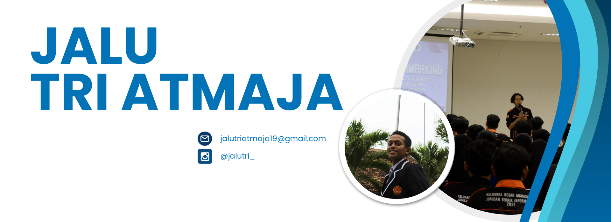

About
I am a student of Information System study programme at Surabaya State University.
Currently, I have passed 4semesters with various college project experiences, such as website prototyping, database analysis, ERP system analysis, and simple website creation. My academic focus has equipped me with a comprehensive understanding of information systems. I have strong teamwork skills, good communication, adaptability, and a great enthusiasm for learning new things. I would like to learn more about the things I have learnt during my university days, especially in information and technology.